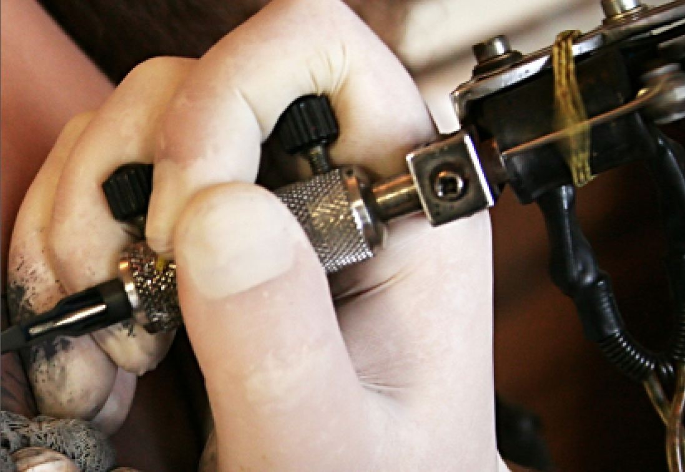

A Tat To Beat That
Tattoo Needles Increase the Response to DNA Vaccines
Shimoni Patel
Fall 2008

When one thinks of the word “tattoo,” thoughts of intricate body
designs and self-expression usually come to mind. But what if these
inked patterns prove to be more than just skin deep? As more mutagenic
pathogens demonstrate advanced levels of multiple-drug resistance, it
has become necessary to improve the efficacy and longevity of
protection of vaccines. Thanks to ongoing medical research, the
artistic phenomenon that is simultaneously a tribal tradition and a
fashion statement has entered the realm of science as a potential
advancement of current DNA vaccine technology.
Martin Müller, MD, PhD, and colleagues at the German
Cancer Research Center in Heidelberg, Germany, have concluded that DNA
vaccines are more effective when delivered through a tattoo gun than if
administered via intramuscular injection. Müller’s study, which was
reported in a February 2008 article of Genetic Vaccines and Therapy
Journal, consisted of an experiment in which he used a protein from the
human papilloma virus 16 DNA as an antigen in mice. After comparing the
effects of administering the vaccine through a tattoo gun versus a
traditional intramuscular injection, he found that the tattooing method
produced a stronger antibody response. Three doses of vaccine
administered via tattoo gun produced an antibody response significantly
greater than that of the same amount via adjuvant-supplemented
intramuscular injection. Another benefit of the tattoo gun delivery is
that it does not require any additional chemical substances, medically
referred to as adjuvants, which are normally used in vaccines to boost
the immune response. This tattooing method therefore appears to be
ideal in the eyes of vaccinologists, dedicated biomedical researchers
who spend years looking for vaccines that are stable and do not require
adjuvants or immune boosters.
So how is tattooing a better form of vaccine
administration, even without the adjuvants? A vibrating tattoo needle
creates a wound that causes a type of inflammation that strongly
stimulates the immune system to activate its defensive duties. In his
study, Müller describes tattooing as “an invasive procedure involving a
solid vibrating needle that repeatedly punctures the skin…causing
cutaneous inflammation followed by healing.” Thus, the body’s reaction
to vaccines through tattoos is stronger than that of a single injection
into the muscle. Another explanation derived from Müller’s research is,
“as tattooing involves a much larger area of the skin than intradermal
injections, it offers an advantage of potentially transfecting more
cells over a larger surface area. Gene expression after DNA tattooing
has been shown to be higher than that after intra-dermal injection.” A
greater number of cells that have DNA vaccine embedded in them
increases the body’s immune response to a specific antigen, thus
resulting in a higher production of antibodies. This increased specific
cellular immune response generates more immune cells and components,
such as T-cells, cytokines, and macrophages. Consequently, using a
tattoo gun rather than an injection will allow doctors and scientists
to use “naked DNA,” which does not require any immunological help.